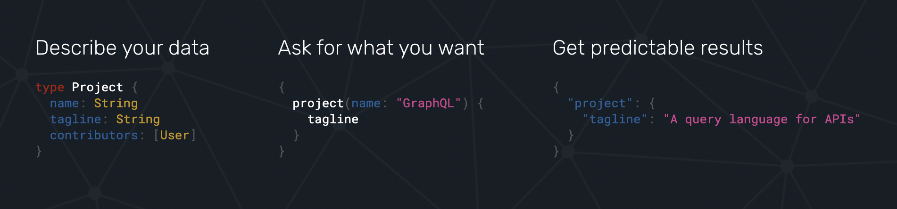

- The very basics of GraphQL
- GraphQL toolchain - Apollo, Relay
- How To GraphQL - simple example
What is GraphQL ?
GraphQL is a query language for APIs and ...
a runtime for fulfilling those queries with your existing data.
- Understandable description of the data
- Ask for exactly what you need
- Easier to evolve APIs over time
Facebook's mobile apps have been powered by GraphQL since 2012.
Open sourced in 2015
Remember REST API?
| REST is an architectural concept for network-based software | GraphQL is a specification, a query language |
| Get complete datasets, overfetching | “Have it your way” by describing exactly what you want |

GraphQL Flow
A GraphQL service is created by defining types and fields on those types
type Query {
me: User
}
type User {
id: ID
name: String
}
...then providing functions for each field on each type
function Query_me(request) {
return request.auth.user;
}
function User_name(user) {
return user.getName();
}
Service checks a query and then runs the functions to produce a result.
{
me {
name
}
}
like this JSON:
{
"me": {
"name": "Luke Skywalker"
}
}
{
academyPosts {
title
}
}
{
"data": {
"academyPosts": [
{
"title": "Headless Mobile Content Management System (Mobile CMS)"
},
{
"title": "What is Content as a Service (Caas)"
},
{
"title": "Headless CMS and SEO Best Practices"
},
{
"title": "What Is A Headless CMS?"
},
{
"title": "Understanding Digital Experience Platforms (DXP) and Headless CMS"
},
{
"title": "Understanding the Content Mesh and how a Headless CMS fits in."
},
{
"title": "The Era of Application Content"
},
{
"title": "Best Practices for Headless Content Modelling"
},
{
"title": "Choosing the best Headless CMS"
},
{
"title": "What is GraphQL?"
},
{
"title": "Choosing a Headless CMS for Content Creators"
},
{
"title": "Selecting a Headless CMS - a Checklist"
},
{
"title": "What is a DXP (Digital Experience Platform)?"
},
{
"title": "What is the JAMStack?"
}
]
}
}
GraphQL toolchain - Appolo
Nice tutorials with official certifications
Client, Backend and Cloud
GraphQL toolchain - Relay
components declare what data they need, and Relay figures out how to efficiently fetch it
Sources